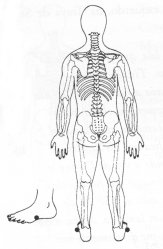

Trava de Segurança da Energia 24 - Quinta Profundidade.
|
 |
TSE 24 Colocar as mãos no meio do peito do pé na lateral externa entre o quarto e quinto dedos TSE 24. ou
M.d. sobre a virilha direita TSE 15;
M.e. toque a borda externa direita da omoplata, perto da axila TSE 26. |
|
Notas:1 - M.d. = mão direita M.e. = mão esquerda.
2 - O texto sublinhado indica que pode ser feito usando alternadamente o lado
direito (mão direita) e depois o lado esquerdo (mão esquerda).
3 - Tocar a área indicada, com a ponta dos dedos da mão, durante
alguns minutos ou até sentir uma pulsação rítmica.
Não precisamos nos preocupar em demasia com a precisão da área
indicada, pois cada trava de segurança da energia tem uma abragência
de uns sete centímetros em torno de si.